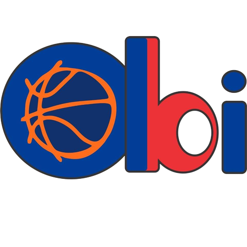

<ion-header>
  <ion-toolbar color="sesion">
    
    <ion-buttons [collapse]="true" slot="end">
      <ion-button routerLink="/inicio"><ion-icon name="log-out-outline"></ion-icon></ion-button>
    </ion-buttons>
  </ion-toolbar>
</ion-header>

<ion-content>
  <!-- Se genega cada card para los próximos partidos-->
  <ion-card ion-item *ngFor="let partido of data">
    <ion-card-header class="header-card">
      <ion-card-title class="titulo">{{ partido.categoria }}</ion-card-title>
    </ion-card-header>
      <br>
      <ion-card-subtitle class="equipo1">{{ partido.local }}</ion-card-subtitle>
      <br><ion-label>VS</ion-label>
      <br>
      <br>
      <ion-card-subtitle class="equipo2">{{ partido.visitante }}</ion-card-subtitle>
      <br>

    <ion-card-content>
      <ion-label class="lugar">Lugar: {{ partido.lugar }}</ion-label><br>
      <ion-label class="fecha">Fecha: {{ partido.fecha }}</ion-label>
    </ion-card-content>
  </ion-card>

</ion-content>

<ion-footer>
  <ion-toolbar>
    <ion-grid>
      <ion-row>
        <ion-col>
          <ion-button size="large" color="dark" fill="clear" onclick="window.history.back()"><ion-icon
              name="home-outline"></ion-icon></ion-button>
          <ion-button size="large" href="/calendario" color="dark" fill="clear"><ion-icon
              name="calendar-number-outline"></ion-icon></ion-button>
        </ion-col>
      </ion-row>
    </ion-grid>
  </ion-toolbar>

</ion-footer>